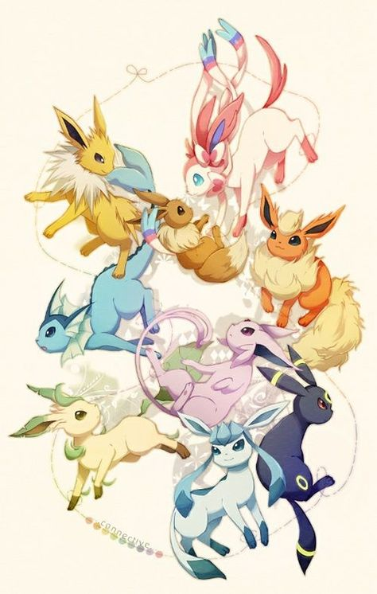

Pokémon
Pokémon (japanisch ポケモン ['pokemoɴ], kurz für ポケットモンスター Poketto Monsutā,
deutsch Taschenmonster; in Eigenschreibweise auch: PoKéMoN oder POKéMON) sind
Fantasiewesen in der gleichnamigen Serie von Videospielen. Die Spiele wurden ursprünglich
von Satoshi Tajiri und der japanischen Spielesoftwarefirma GAME FREAK Inc. entwickelt und
stellen eines der wichtigsten Franchises des Publishers Nintendo dar. Die Pokémon können
vom Spieler gefangen, gesammelt und trainiert werden. Dem Erfolg des 1996 erstmals
veröffentlichten Spieles folgten eine Anime-Fernsehserie, ein Sammelkartenspiel, eine
große Zahl von Merchandising-Produkten und seit 1998 bisher 21 Kinofilme. Die
Videospiele des Pokémon-Franchises verkauften sich weltweit zusammen über 200 Millionen
Mal.[1] Insofern kann die Reihe als eines der erfolgreichsten Produkte der modernen
Spieleindustrie betrachtet werden.
Der Anime
Der Pokémon-Anime ist eine eigenständige Fernsehserie, die größtenteils auf den
Ereignissen und Charakteren der Hauptspiele basiert. Die einzige Ausnahme ist das
Spiel Pokémon Gelb, das zum Teil auf den Vorgängerspielen und zum Teil auf dem Anime
basiert. Die Handlung des Animes folgt dem Hauptcharakter Ash Ketchum, der zusammen mit
ein paar Freunden durch die verschiedenen Regionen reist und die Arenaleiter dort
herausfordert. Die erste Episode, Pika – Pikachu, beginnt damit, dass Ash ein Pikachu
als Starter-Pokémon erhält, was von den üblichen Startern Kantos abweicht. Seit Pokémon
Advance? orientiert sich die Serie noch stärker an den Spielen. So werden z. B. auch die
speziellen Fähigkeiten der Pokémon erwähnt.
In der ersten Staffel reist Ash zusammen mit Rocko, dem Arenaleiter von Marmoria City,
und Misty, der jungen Arenaleiterin von Azuria City, durch die Kanto-Region. In der
zweiten Staffel besucht Ash das Orange-Archipel, die in den Spielen nicht vorkommen.
Dabei wird er von Tracey, einem Pokémon-Beobachter der Region, anstelle von Rocko
begleitet. In den folgenden Staffeln 3 - 5 streifen Ash, Rocko und Misty durch
die gesamte Johto-Region.
In den Staffeln 6 - 8 des Animes macht sich Ash auf nach Hoenn, wo er der Handlung der
Spiele der dritten Generation folgt. Mit von der Partie sind diesmal Maike, eine
Pokémon-Trainerin und Koordinatorin, und Max, ihr kleiner, noch unerfahrener Bruder.
Etwas später schließt sich auch Rocko wieder der Gruppe an.
Die 8. und 9. Staffel konzentrieren sich auf die in Pokémon Smaragd eingeführte
Kampfzone und zeigt Ash, wie er versucht alle Kampfzonen-Symbole zu sammeln.
Dabei bereist er die Kanto- und die Hoenn-Region.
In den Staffeln 10 bis 13 reist Ash zusammen mit Rocko nach Sinnoh, um die neue Region
zu erkunden. Dabei schließt sich ihm ein junges Mädchen, Lucia, an, das die beste
Koordinatorin werden will und darum immer wieder an Wettbewerben teilnimmt.
In den Staffeln 14, 15 und 16 bereist Ash die Einall-Region und das Decolor-Archipel.
Hier trifft er bereits am Anfang auf die energische Lilia und nach Ashs Sieg in der
Orion City-Arena kommt Benny hinzu.
Ab der 17. Staffel beginnt Ashs Reise in Kalos. Dabei begleiten ihn die frisch gebackene
Trainerin Serena, Arenaleiter Citro und dessen Schwester Heureka, letztere trifft er
gleich nach der Ankunft in Illumina City.
In der 20.Staffel beginnt Ashs Reise in Alola.